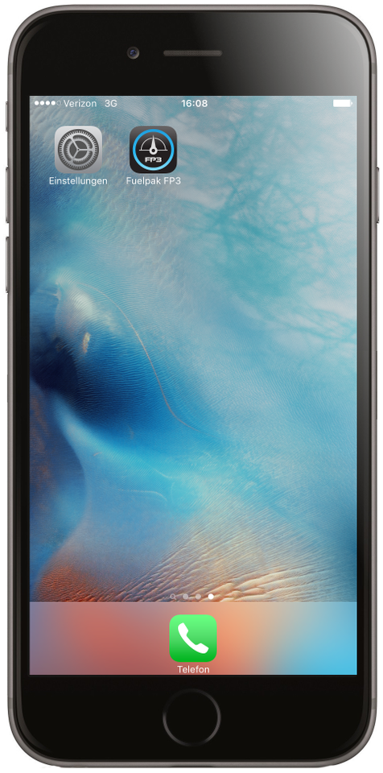
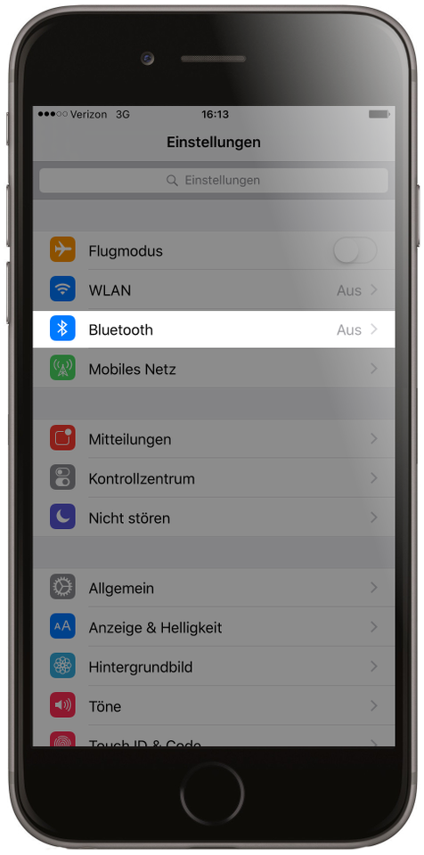
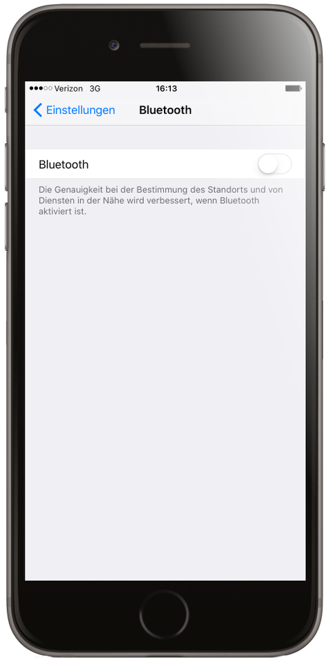
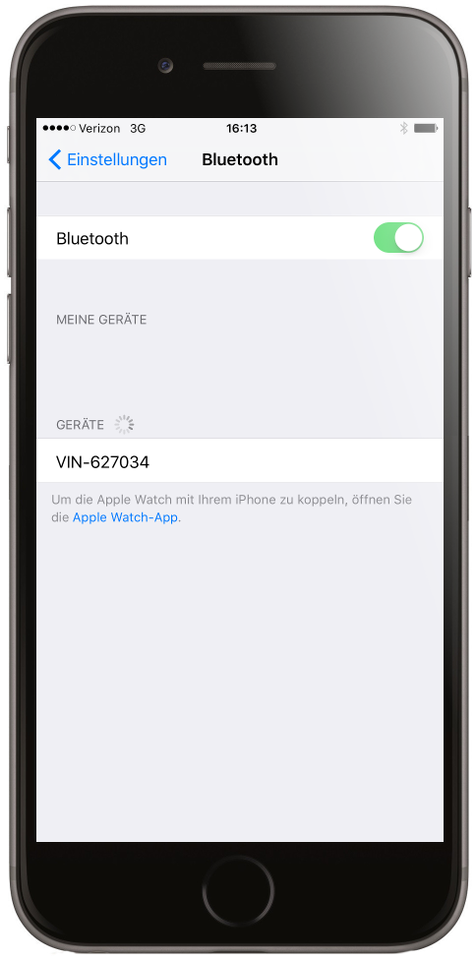
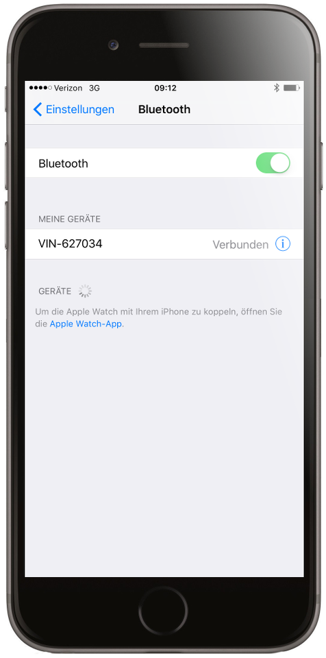

Web Anleitung
1. Installieren Sie den FP3 in den Diagnostik-Port Ihres Motorrads.

2. Schalten Sie den Hauptschalter des Motorrads ein.

3. Nach einige Sekunden wird eine LED langsam blinken.

4. Gehen Sie bei Ihrem iOS Gerät zu Einstellungen.
5. Bluetooth wählen.
6. Bluetooth einschalten (falls nicht bereits ein). Finden Sie Ihr Motorrad im Drop Down Menu von den verfügbare Geräten und wählen Sie es.

7. Einmal verbunden, gehen Sie zur FP3 App. Die App sollte nun die FP3 Hardware, verbunden mit Ihrem Motorrad, erkennen.
